Candidate List 20260805Last night — ZTF: 3,995 passed basic cuts (298 young) · LSST: 0 passed basic cuts (0 young)Previous Day Next Day
Section 1: New Sources (age<1d) Section 2: Old (1-5d) sources observed last nightplaceholder
Section 1: New Afterglow/FBOT Cands Last Night (4)
1. [ZTF] ZTF26ablwawv (Afterglow?FBOT?) [Back to Top] [Share] [Trigger Swift] [Fritz Alert] [Fritz Source] [Lasair]RA, Dec: 260.65698, 11.10306 17h22m37.68s, 11d 6m11.02sGalactic (l, b): 33.07738, 24.69738 ext(g-r) = 0.159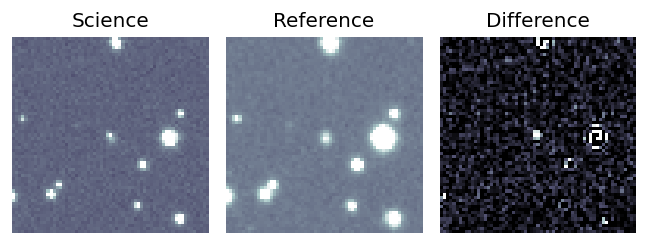
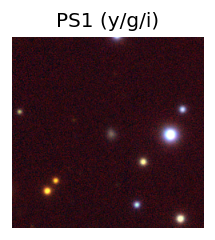
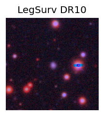
TESS: Sectors 118
PS1: 0 sources in 3 arcsec
LegacySurvey: 1 sources in 3 arcsec Closest: d = 1.34 arcsec, 216.2 deg (east of north) photoz=0.22 (68% bounds 0.2, 0.24), type=SER peak abs mag = -21.22 (68% bounds -20.96, -21.42)
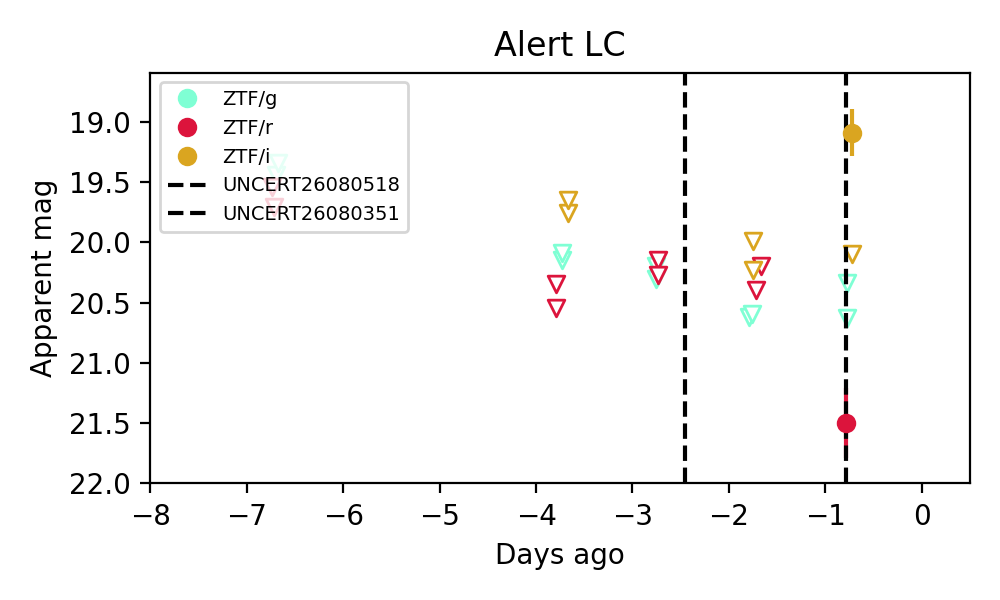
Extinction-corrected gr color:
From alerts: -1.04 +/- 99 mag
Extinction-corrected gi color:
From alerts: 1.29 +/- 99 mag
Extinction-corrected ri color:
From alerts: 2.33 +/- 0.35 mag
Consistent with synchrotron, g-r>0!
Rise Rate:
i: 1.11 mag/day
Fade Rate:
2. [ZTF] ZTF26ablwczl (Afterglow?) [Back to Top] [Share] [Trigger Swift] [Fritz Alert] [Fritz Source] [Lasair]RA, Dec: 278.23497, 12.1573 18h32m56.39s, 12d 9m26.27sGalactic (l, b): 41.76897, 9.56549 ext(g-r) = 0.422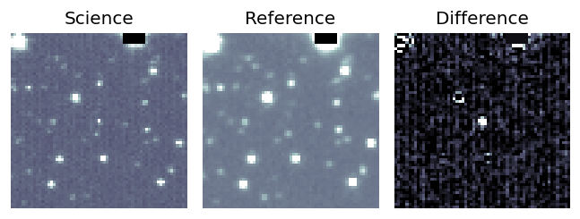
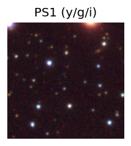

TESS: Sectors [ 80 118]
PS1: 0 sources in 3 arcsec
LegacySurvey: 0 sources in 3 arcsec
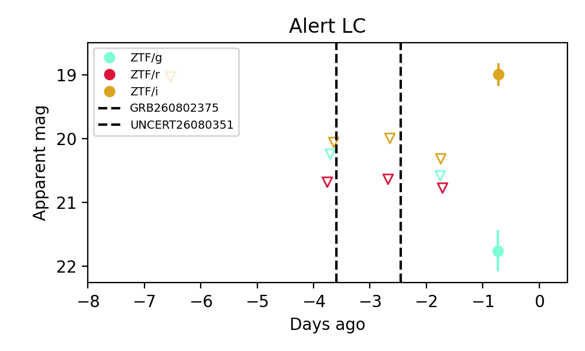
Extinction-corrected gi color:
From alerts: 2.11 +/- 0.37 mag
Consistent with synchrotron, g-r>0!
Rise Rate:
i: 1.27 mag/day
Fade Rate:
3. [ZTF] ZTF26ablwfmg (Afterglow?) [Back to Top] [Share] [Trigger Swift] [Fritz Alert] [Fritz Source] [Lasair]RA, Dec: 275.13707, 4.01971 18h20m32.90s, 4d 1m10.97sGalactic (l, b): 33.00533, 8.70002 ext(g-r) = 0.415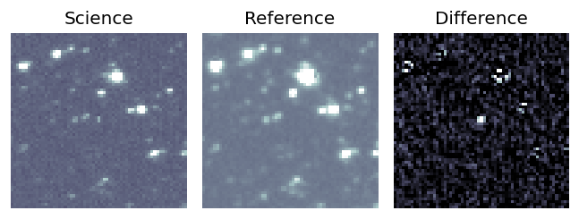
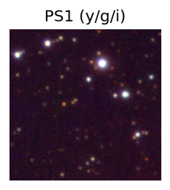

TESS: Sectors [ 80 118]
PS1: 0 sources in 3 arcsec
LegacySurvey: 0 sources in 3 arcsec
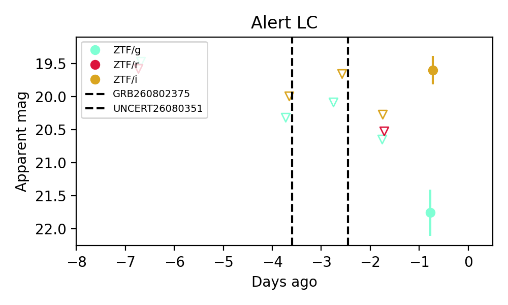
Extinction-corrected gi color:
From alerts: 1.52 +/- 0.41 mag
Consistent with synchrotron, g-r>0!
Rise Rate:
i: 0.66 mag/day
Fade Rate:
4. [ZTF] ZTF26ablwlka (Afterglow?) [Back to Top] [Share] [Trigger Swift] [Fritz Alert] [Fritz Source] [Lasair]RA, Dec: 302.11601, 49.42739 20h 8m27.84s, 49d25m38.61sGalactic (l, b): 84.50049, 8.94294 ext(g-r) = 0.311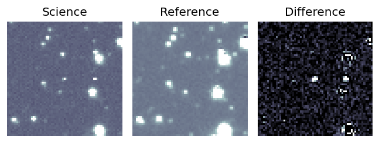
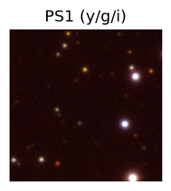

TESS: Sectors [ 14 15 16 41 54 55 56 75 76 81 82 83 120 121]
PS1: 0 sources in 3 arcsec
LegacySurvey: 0 sources in 3 arcsec
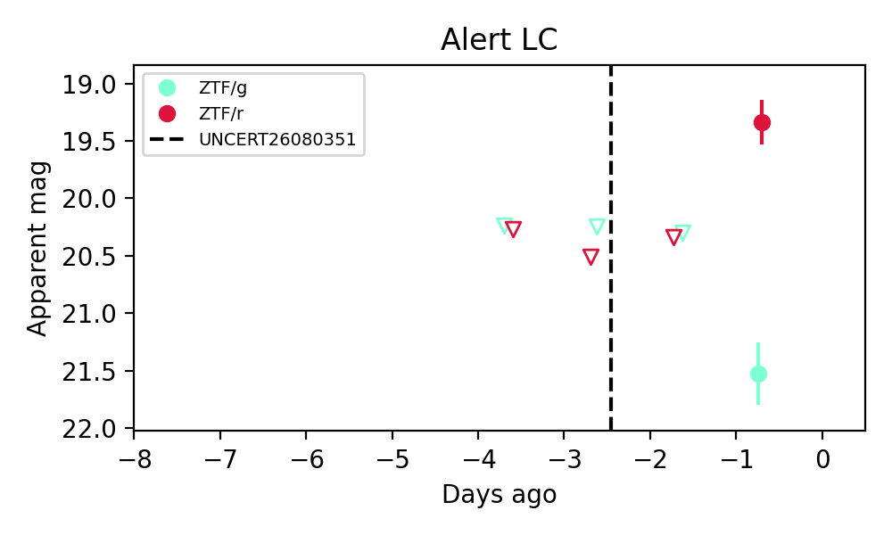
Extinction-corrected gr color:
From alerts: 1.88 +/- 0.33 mag
Consistent with synchrotron, g-r>0!
Rise Rate:
r: 0.98 mag/day
Fade Rate:
Section 2: Older Sources Observed Last Night (19)
0. [ZTF] ZTF26ablengy (Afterglow?) [Back to Top] [Share] [Trigger Swift] [Fritz Alert] [Fritz Source] [Lasair]RA, Dec: 274.88566, 1.82835 18h19m32.56s, 1d49m42.05sGalactic (l, b): 30.91682, 7.92895 ext(g-r) = 0.906


TESS: Sectors [ 80 118]
PS1: 1 source in 3 arcsec Closest: d = 2.52 arcsec photoz=0.22+/-0.39 peak abs mag = -22.86
LegacySurvey: 0 sources in 3 arcsec

Extinction-corrected gr color:
From alerts: -0.19 +/- 0.27 mag
Extinction-corrected gi color:
From alerts: -0.49 +/- 0.31 mag
Extinction-corrected ri color:
From alerts: -0.3 +/- 0.27 mag
Consistent with synchrotron, g-r>0!
Rise Rate:
g: 0.06 mag/day
r: 0.17 mag/day
i: 0.17 mag/day
Fade Rate:
g: 0.21 mag/day
r: 0.17 mag/day
i: 0.24 mag/day
1. [ZTF] ZTF26ablevah (Afterglow?) [Back to Top] [Share] [Trigger Swift] [Fritz Alert] [Fritz Source] [Lasair]RA, Dec: 292.72675, -4.23224 19h30m54.42s, -4d-13m-56.07sGalactic (l, b): 33.64605, -10.70483 ext(g-r) = 0.606


TESS: Sectors [54 81]
PS1: 1 source in 3 arcsec Closest: d = 2.65 arcsec photoz=0.88+/-0.22 peak abs mag = -27.43
LegacySurvey: 0 sources in 3 arcsec

Extinction-corrected gr color:
From alerts: -0.26 +/- 0.1 mag
Extinction-corrected gi color:
From alerts: -0.33 +/- 0.11 mag
Extinction-corrected ri color:
From alerts: -0.07 +/- 0.09 mag
Consistent with synchrotron, g-r>0!
Rise Rate:
g: 0.27 mag/day
r: 0.67 mag/day
i: 0.37 mag/day
Fade Rate:
g: 0.15 mag/day
r: 0.28 mag/day
i: 0.11 mag/day
2. [ZTF] ZTF26ablkwfo (Afterglow?) [Back to Top] [Share] [Trigger Swift] [Fritz Alert] [Fritz Source] [Lasair]RA, Dec: 269.78882, -8.71753 17h59m9.32s, -8d-43m-3.10sGalactic (l, b): 19.11374, 7.4602 ext(g-r) = 1.252


TESS: Sectors [ 80 118]
PS1: 1 source in 3 arcsec Closest: d = 2.44 arcsec photoz=0.92+/-0.08 peak abs mag = -27.90
LegacySurvey: 0 sources in 3 arcsec

Extinction-corrected gr color:
From alerts: -0.53 +/- 0.12 mag
Extinction-corrected gi color:
From alerts: -0.66 +/- 0.12 mag
Extinction-corrected ri color:
From alerts: -0.13 +/- 0.13 mag
Consistent with synchrotron, g-r>0!
Rise Rate:
g: 0.33 mag/day
r: 1.53 mag/day
i: 0.68 mag/day
Fade Rate:
g: 0.3 mag/day
r: 0.38 mag/day
i: 0.33 mag/day
3. [ZTF] ZTF26ablljtj (Afterglow?) [Back to Top] [Share] [Trigger Swift] [Fritz Alert] [Fritz Source] [Lasair]RA, Dec: 287.62084, 7.86239 19h10m29.00s, 7d51m44.61sGalactic (l, b): 42.09518, -0.61902 ext(g-r) = 29.811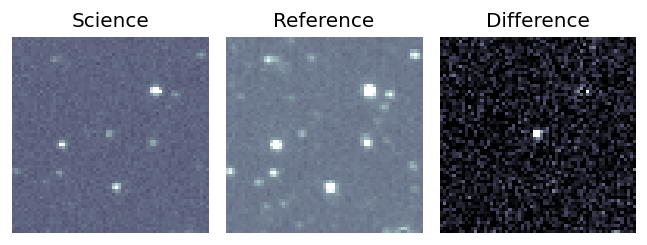
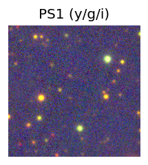

TESS: Sectors [54 80]
PS1: 0 sources in 3 arcsec
LegacySurvey: 0 sources in 3 arcsec
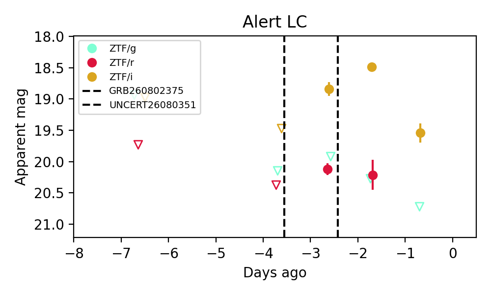
Extinction-corrected gr color:
From alerts: -29.75 +/- 99 mag
Extinction-corrected gi color:
From alerts: -44.78 +/- 99 mag
Extinction-corrected ri color:
From alerts: -14.42 +/- 0.25 mag
Rise Rate:
r: 0.23 mag/day
i: 0.63 mag/day
Fade Rate:
i: 0.25 mag/day
4. [ZTF] ZTF26ablnnlb (Afterglow?) [Back to Top] [Share] [Trigger Swift] [Fritz Alert] [Fritz Source] [Lasair]RA, Dec: 9.71403, -16.10896 0h38m51.37s, -16d-6m-32.26sGalactic (l, b): 107.46218, -78.60103 ext(g-r) = 0.026


TESS: Sectors [ 3 30 107]
NED (10 arcsec):Found NED spec-z: z=0.02; peak abs mag = -16.34
PS1: 0 sources in 3 arcsec
LegacySurvey: 0 sources in 3 arcsec

Extinction-corrected gr color:
From alerts: 0.36 +/- 99 mag
Extinction-corrected ri color:
From alerts: -0.03 +/- 0.14 mag
Consistent with synchrotron, g-r>0!
Rise Rate:
g: 0.14 mag/day
r: 0.59 mag/day
i: 1.05 mag/day
Fade Rate:
5. [ZTF] ZTF26ablpqzw (FBOT?) [Back to Top] [Share] [Trigger Swift] [Fritz Alert] [Fritz Source] [Lasair]RA, Dec: 227.72978, 13.34022 15h10m55.15s, 13d20m24.79sGalactic (l, b): 17.01262, 54.65635 ext(g-r) = 0.04


TESS: Sectors 51
SDSS (<15 kpc):Found SDSS phot-z: z=0.16; peak abs mag = -19.72
PS1: 0 sources in 3 arcsec
LegacySurvey: 1 sources in 3 arcsec Closest: d = 0.27 arcsec, 228.1 deg (east of north) photoz=0.15 (68% bounds 0.13, 0.17), type=SER peak abs mag = -19.49 (68% bounds -19.16, -19.77)

Extinction-corrected gr color:
From alerts: 0.46 +/- 0.25 mag
Extinction-corrected gi color:
From alerts: 0.04 +/- 0.31 mag
Extinction-corrected ri color:
From alerts: -0.24 +/- 0.3 mag
Consistent with synchrotron, g-r>0!
Rise Rate:
r: 0.21 mag/day
Fade Rate:
6. [ZTF] ZTF26ablrkro (Afterglow?) [Back to Top] [Share] [Trigger Swift] [Fritz Alert] [Fritz Source] [Lasair]RA, Dec: 250.43202, 14.67838 16h41m43.68s, 14d40m42.18sGalactic (l, b): 32.15897, 35.25435 ext(g-r) = 0.088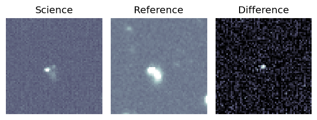
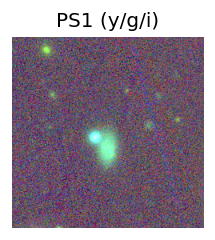
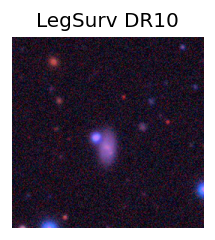
TESS: Sectors [ 79 117]
SDSS (<15 kpc):Found SDSS phot-z: z=0.08; peak abs mag = -18.85
PS1: 0 sources in 3 arcsec
LegacySurvey: 1 sources in 3 arcsec Closest: d = 4.61 arcsec, 115.9 deg (east of north) photoz=0.03 (68% bounds 0.01, 0.12), type=PSF peak abs mag = -16.72 (68% bounds -14.36, -19.54)
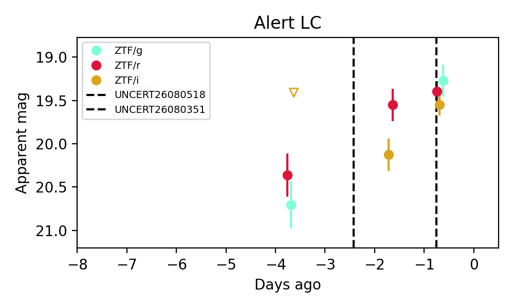
Extinction-corrected gr color:
From alerts: -0.21 +/- 0.22 mag
Extinction-corrected gi color:
From alerts: -0.41 +/- 0.22 mag
Extinction-corrected ri color:
From alerts: -0.2 +/- 0.17 mag
Consistent with synchrotron, g-r>0!
Rise Rate:
g: 0.47 mag/day
r: 0.31 mag/day
i: 0.56 mag/day
Fade Rate:
7. [ZTF] ZTF26ablrmwg (FBOT?) [Back to Top] [Share] [Trigger Swift] [Fritz Alert] [Fritz Source] [Lasair]RA, Dec: 301.02841, 71.67302 20h 4m6.82s, 71d40m22.88sGalactic (l, b): 104.367, 20.21801 ext(g-r) = 0.311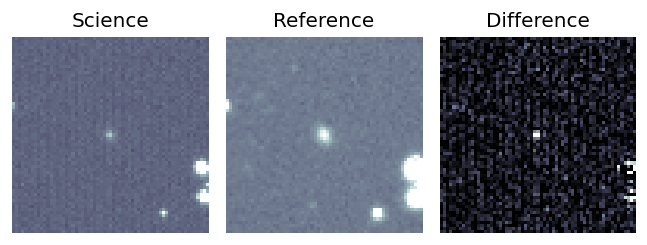
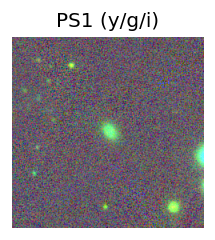

TESS: Sectors [ 15 16 17 18 19 20 21 22 23 25 26 40 47 48 49 50 51 52
54 55 56 57 58 59 60 73 74 75 76 77 78 79 80 83 84 85
86 117 118 119 121]
PS1: 1 source in 3 arcsec Closest: d = 0.35 arcsec photoz=0.14+/-0.10 peak abs mag = -20.13
LegacySurvey: 0 sources in 3 arcsec
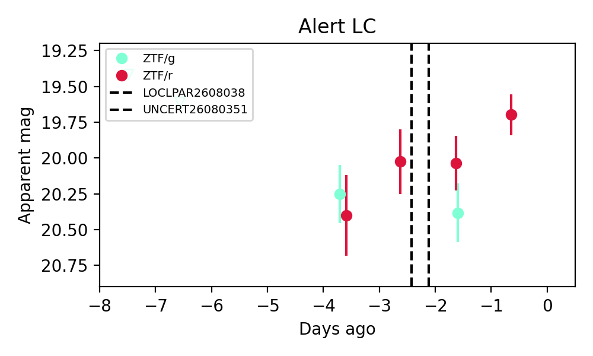
Extinction-corrected gr color:
From alerts: 0.04 +/- 0.28 mag
Consistent with synchrotron, g-r>0!
Rise Rate:
g: 0.02 mag/day
r: 0.21 mag/day
Fade Rate:
8. [ZTF] ZTF26ablrygn (Afterglow?) [Back to Top] [Share] [Trigger Swift] [Fritz Alert] [Fritz Source] [Lasair]RA, Dec: 327.96568, 41.81727 21h51m51.76s, 41d49m2.15sGalactic (l, b): 90.69655, -9.54674 ext(g-r) = 0.373


TESS: Sectors [ 15 16 56 83 121]
PS1: 0 sources in 3 arcsec
LegacySurvey: 0 sources in 3 arcsec

Extinction-corrected gr color:
From alerts: -0.02 +/- 0.13 mag
Consistent with synchrotron, g-r>0!
Rise Rate:
g: 2.31 mag/day
r: 2.02 mag/day
Fade Rate:
r: 0.27 mag/day
9. [ZTF] ZTF26ablunoc (FBOT?) [Back to Top] [Share] [Trigger Swift] [Fritz Alert] [Fritz Source] [Lasair]RA, Dec: 206.5003, -4.43176 13h46m0.07s, -4d-25m-54.34sGalactic (l, b): 327.65919, 55.79829 ext(g-r) = 0.029


TESS: Sectors [ 50 91 115]
PS1: 0 sources in 3 arcsec
LegacySurvey: 1 sources in 3 arcsec Closest: d = 1.47 arcsec, 22.1 deg (east of north) photoz=0.17 (68% bounds 0.13, 0.21), type=REX peak abs mag = -19.78 (68% bounds -19.22, -20.32)

Rise Rate:
r: 0.24 mag/day
Fade Rate:
10. [ZTF] ZTF26ablvaag (FBOT?) [Back to Top] [Share] [Trigger Swift] [Fritz Alert] [Fritz Source] [Lasair]RA, Dec: 255.19769, 9.33735 17h 0m47.44s, 9d20m14.44sGalactic (l, b): 28.71183, 28.79556 ext(g-r) = 0.093


TESS: Sectors 117
PS1: 0 sources in 3 arcsec
LegacySurvey: 1 sources in 3 arcsec Closest: d = 0.35 arcsec, 6.1 deg (east of north) photoz=1.63 (68% bounds 1.12, 2.16), type=PSF peak abs mag = -25.36 (68% bounds -24.35, -26.1)

Extinction-corrected gr color:
From alerts: -0.91 +/- 99 mag
Rise Rate:
r: 0.52 mag/day
Fade Rate:
11. [ZTF] ZTF26ablvoan (FBOT?) [Back to Top] [Share] [Trigger Swift] [Fritz Alert] [Fritz Source] [Lasair]RA, Dec: 291.22735, 20.6839 19h24m54.56s, 20d41m2.03sGalactic (l, b): 55.06354, 2.28607 ext(g-r) = 2.388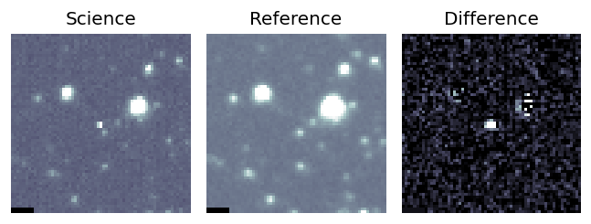
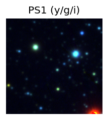

TESS: Sectors [ 14 40 81 119]
PS1: 1 source in 3 arcsec Closest: d = 3.28 arcsec photoz=0.12+/-0.02 peak abs mag = -27.58
LegacySurvey: 0 sources in 3 arcsec
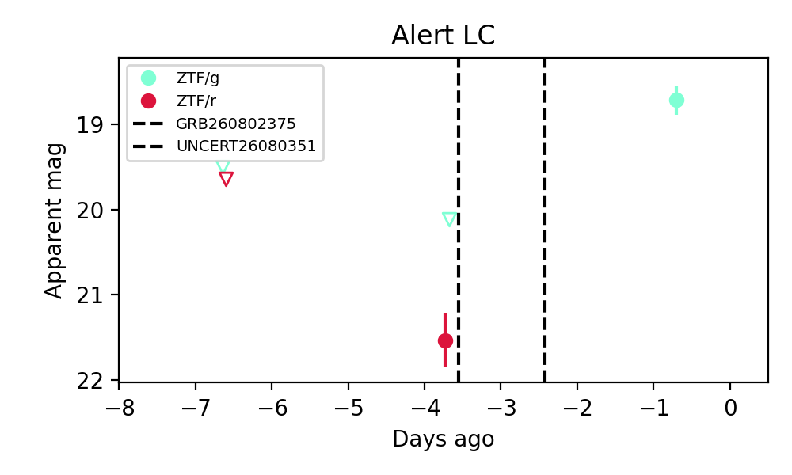
Extinction-corrected gr color:
From alerts: -3.81 +/- 99 mag
Rise Rate:
g: 0.47 mag/day
Fade Rate:
12. [ZTF] ZTF26ablvoru (FBOT?) [Back to Top] [Share] [Trigger Swift] [Fritz Alert] [Fritz Source] [Lasair]RA, Dec: 302.35366, 33.68235 20h 9m24.88s, 33d40m56.45sGalactic (l, b): 71.26331, 0.32905 ext(g-r) = 4.141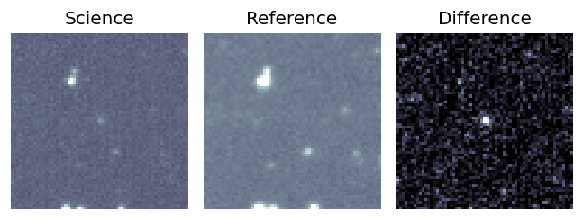
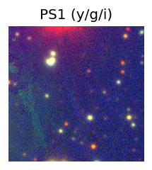

TESS: Sectors [ 14 15 41 54 55 75 81 82 120]
PS1: 1 source in 3 arcsec Closest: d = 2.11 arcsec photoz=0.09+/-0.03 peak abs mag = -30.97
LegacySurvey: 0 sources in 3 arcsec
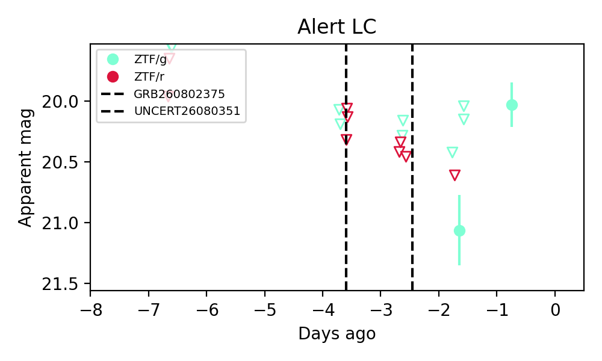
Extinction-corrected gr color:
From alerts: -3.69 +/- 99 mag
Rise Rate:
g: 1.14 mag/day
Fade Rate:
13. [ZTF] ZTF26ablwncd (Afterglow?) [Back to Top] [Share] [Trigger Swift] [Fritz Alert] [Fritz Source] [Lasair]RA, Dec: 297.14953, 50.17794 19h48m35.89s, 50d10m40.60sGalactic (l, b): 83.53575, 12.09484 ext(g-r) = 0.219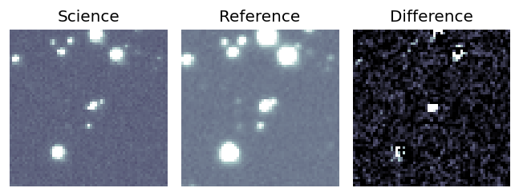
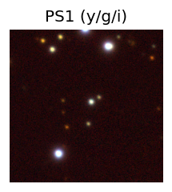

TESS: Sectors [ 14 15 41 54 55 56 74 76 81 82 83 119 120 121]
PS1: 0 sources in 3 arcsec
LegacySurvey: 0 sources in 3 arcsec
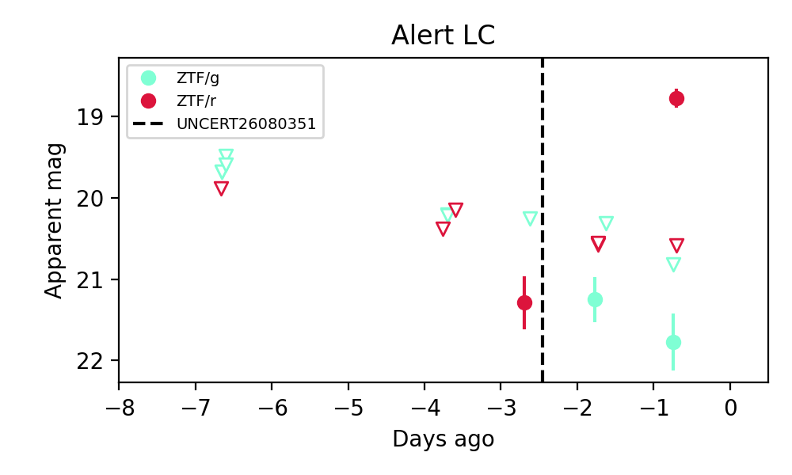
Extinction-corrected gr color:
From alerts: 2.78 +/- 0.37 mag
Consistent with synchrotron, g-r>0!
Rise Rate:
r: 1.76 mag/day
Fade Rate:
14. [ZTF] ZTF26ablxems (FBOT?) [Back to Top] [Share] [Trigger Swift] [Fritz Alert] [Fritz Source] [Lasair]RA, Dec: 318.69614, 49.39596 21h14m47.07s, 49d23m45.46sGalactic (l, b): 91.08631, 0.40506 ext(g-r) = 2.878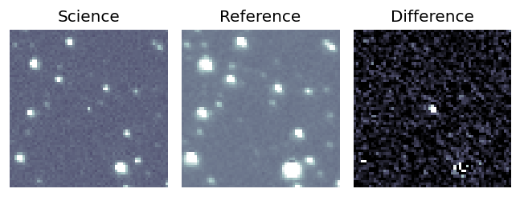
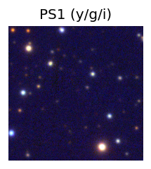

TESS: Sectors [ 15 16 55 56 82 83 121]
PS1: 1 source in 3 arcsec Closest: d = 1.10 arcsec photoz=0.90+/-1.33 peak abs mag = -30.23
LegacySurvey: 0 sources in 3 arcsec
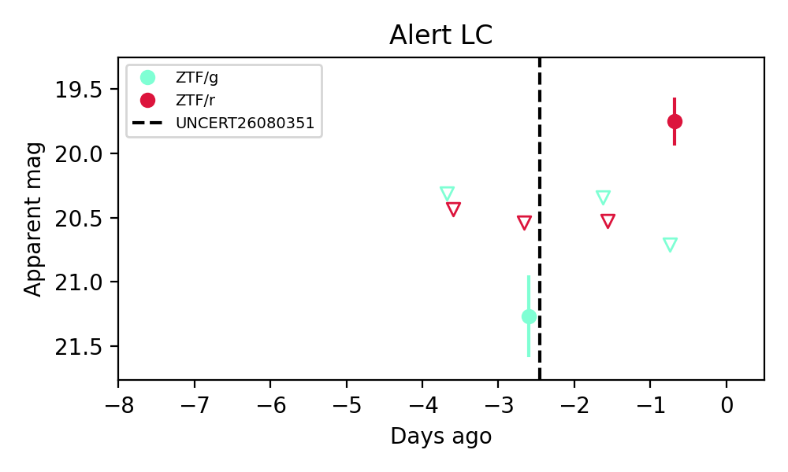
Extinction-corrected gr color:
From alerts: -1.92 +/- 99 mag
Rise Rate:
r: 0.88 mag/day
Fade Rate:
15. [ZTF] ZTF26ablxfan (Afterglow?) [Back to Top] [Share] [Trigger Swift] [Fritz Alert] [Fritz Source] [Lasair]RA, Dec: 330.33999, 54.08265 22h 1m21.60s, 54d 4m57.53sGalactic (l, b): 99.57187, -0.88898 ext(g-r) = 1.644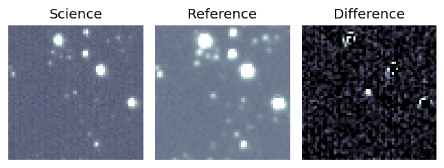
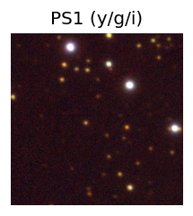

TESS: Sectors [16 17 56 57 76 77 83 84]
PS1: 0 sources in 3 arcsec
LegacySurvey: 0 sources in 3 arcsec
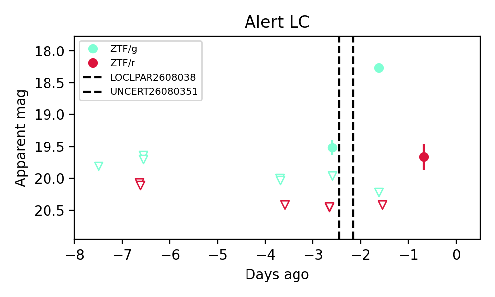
Extinction-corrected gr color:
From alerts: -3.8 +/- 99 mag
Rise Rate:
g: 1.72 mag/day
r: 0.86 mag/day
Fade Rate:
g: 0.72 mag/day
16. [ZTF] ZTF26abmabrc (FBOT?) [Back to Top] [Share] [Trigger Swift] [Fritz Alert] [Fritz Source] [Lasair]RA, Dec: 25.64318, -2.82362 1h42m34.36s, -2d-49m-25.04sGalactic (l, b): 151.83473, -62.78994 ext(g-r) = 0.024


TESS: Sectors [ 3 30 70 97 108]
PS1: 0 sources in 3 arcsec
LegacySurvey: 1 sources in 3 arcsec Closest: d = 0.27 arcsec, 165.3 deg (east of north) photoz=0.39 (68% bounds 0.15, 0.94), type=EXP peak abs mag = -23.14 (68% bounds -20.87, -25.47)

Extinction-corrected gr color:
From alerts: -0.18 +/- 0.12 mag
Extinction-corrected gi color:
From alerts: -0.6 +/- 0.21 mag
Extinction-corrected ri color:
From alerts: -0.42 +/- 0.2 mag
Rise Rate:
g: 0.29 mag/day
r: 0.29 mag/day
i: 0.08 mag/day
Fade Rate:
17. [ZTF] ZTF26abmabun (Afterglow?) [Back to Top] [Share] [Trigger Swift] [Fritz Alert] [Fritz Source] [Lasair]RA, Dec: 301.33504, 34.06737 20h 5m20.41s, 34d 4m2.54sGalactic (l, b): 71.13066, 1.24876 ext(g-r) = 4.284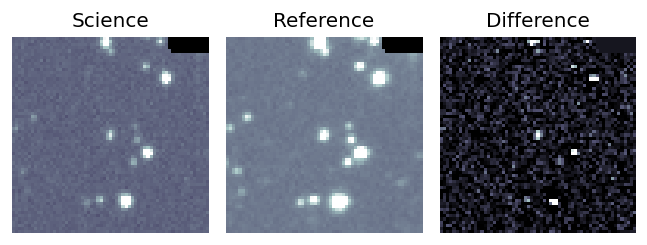
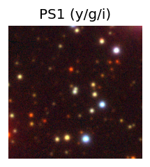

TESS: Sectors [ 14 15 41 54 55 74 75 81 82 120]
PS1: 1 source in 3 arcsec Closest: d = 0.47 arcsec photoz=0.84+/-0.15 peak abs mag = -33.82
LegacySurvey: 0 sources in 3 arcsec
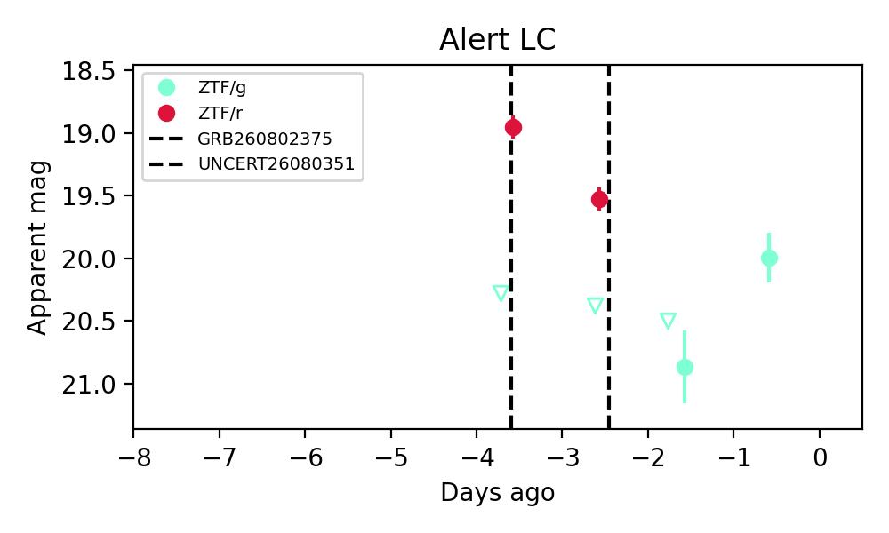
Extinction-corrected gr color:
From alerts: -3.44 +/- 99 mag
Rise Rate:
g: 0.89 mag/day
r: 0.09 mag/day
Fade Rate:
r: 0.57 mag/day
18. [ZTF] ZTF26abmbhrv (Afterglow?) [Back to Top] [Share] [Trigger Swift] [Fritz Alert] [Fritz Source] [Lasair]RA, Dec: 8.96625, 17.26666 0h35m51.90s, 17d15m59.97sGalactic (l, b): 117.62942, -45.4447 ext(g-r) = 0.039


TESS: Sectors [17 42 43 57 84]
SDSS (<15 kpc):Found SDSS phot-z: z=0.66; peak abs mag = -24.47
PS1: 0 sources in 3 arcsec
LegacySurvey: 1 sources in 3 arcsec Closest: d = 3.51 arcsec, 345.0 deg (east of north) photoz=0.66 (68% bounds 0.63, 0.7), type=DEV peak abs mag = -24.41 (68% bounds -24.26, -24.57)

Extinction-corrected gr color:
From alerts: -1.07 +/- 99 mag
Extinction-corrected gi color:
From alerts: -0.66 +/- 99 mag
Extinction-corrected ri color:
From alerts: -0.99 +/- 99 mag
Rise Rate:
g: 0.23 mag/day
r: 0.28 mag/day
Fade Rate:
r: 0.46 mag/day